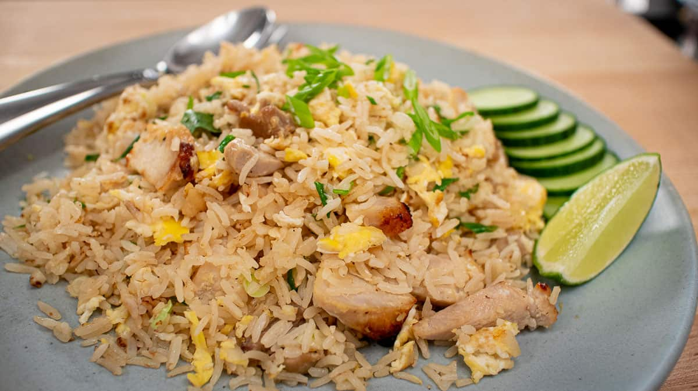

A delicacy from a magical dimension, called Thailand
Though it only seems to be a simple bowl of rice, the combination of flavors come together to satisfy in a way that few other dishes can.
Versatile, elegant, and delectable. A bowl of thai fried rice has so many ways to be enjoyable for all palettes.
Ingredients
- White or Brown Rice
- Eggs
- Onions
- Tomatoes
- Scallions
- Choice of Vegetables
- Choice of Meat or Tofu
- Spinach or Kale
- Choice of Sauce for desired Flavor
- Olive Oil
- Salt, Black Pepper, Paprika, Umami, Garlic
Recipe Instructions
- Wash and prepare your rice
- Chop up your onions and veggies
- Crack your eggs, add black pepper, bullion powder, and paprika
- You have the choice of adding the chopped good from step 2 directly to your eggs as you cook them with the rice
- Alternatively, you can oil fry them seperately and put them on top of the rice
- Mix the rice and egg together
- Put about a tablespoon or more of olive oil on a cooking and preheat it
- Add your flavoring sauce to the rice and egg mixture
- After preheating for 5 minutes, add the mixture to the pan
- Mix and stir the mixutre for 6-7 minutes and medium to low heat
- Grab a plate and add a bed of greens to it
- Put the rice on top of the greens and enjoy to your heart's content
Return to top
Return to Main